Instance Segmentation
has a problem
Semantic segmentation
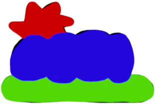
The semantic segmentation problem has a natural solution.
Instance Segmentation
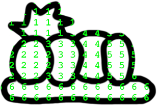
For instance segmentation, some kind of trick is needed.
Existing solutions
Mask R-CNN / Yolo
Arbitrary concept of box. region proposal / grid. NMS.
Mask R-CNN / Yolo
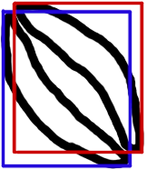
Fails for complex intertwined shapes. Ugly.
Stardist
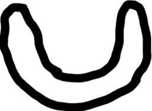
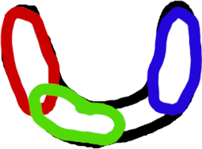
Works ony for simple shapes with well defined centers. Ugly.
Cellpose
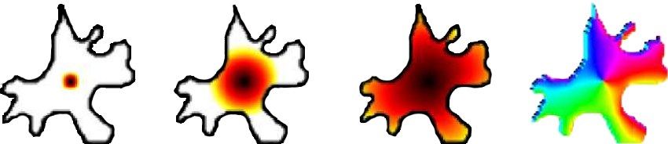
doi.org/10.1038/s41592-020-01018-x
2020
Diffusion simulation form object center. Predicts gradient, aka "path" to center.
Cellpose
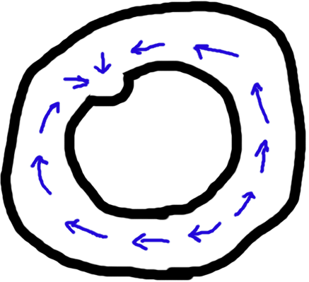
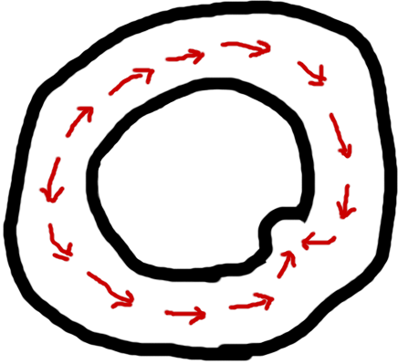
Arbitrary concept of center. Local change has global impacts.
Cellpose
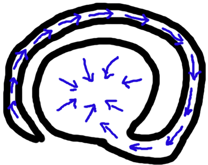
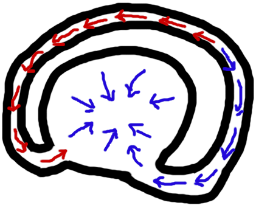
Local change has global impacts. Vanishing gradient. Kinda not ugly.
Panoptic-DeepLab
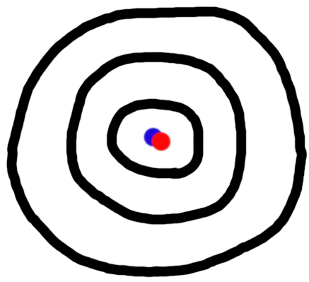
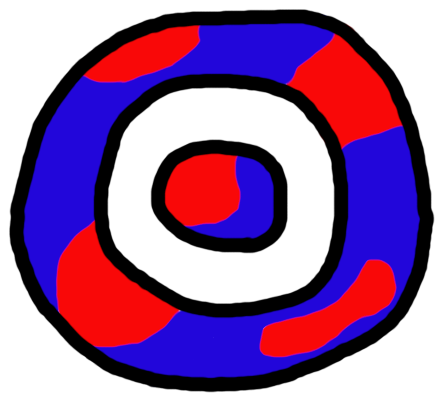
Global object understanding is needed. Fails if centers are next to each other.
MaskFormer
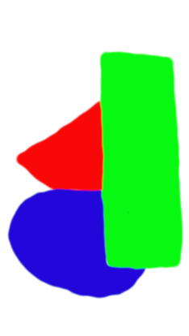
Predicts directly multiple masks.
MaskFormer
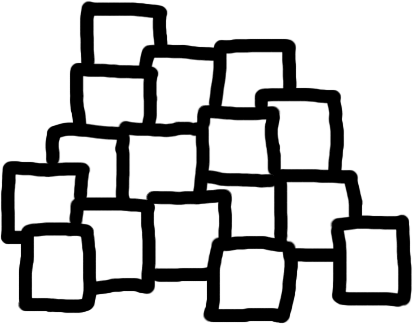
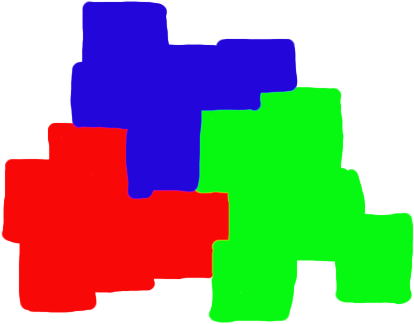
Similar objects -> same mask. I guess.
Facebook Segment Anything Model
doi.org/10.48550/arXiv.2304.02643
2023
Needs extra input. E.g. point. Generates mask containing the point.
Facebook Segment Anything Model
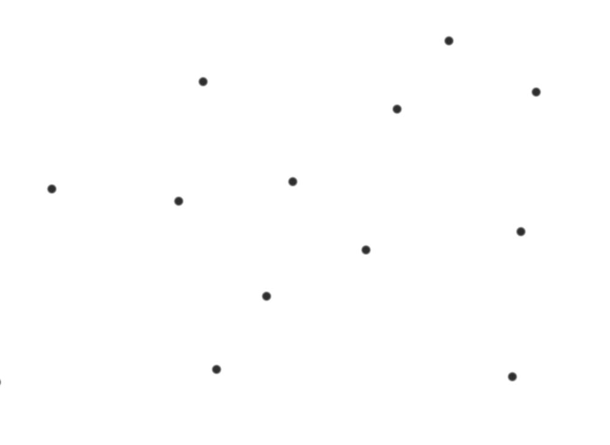
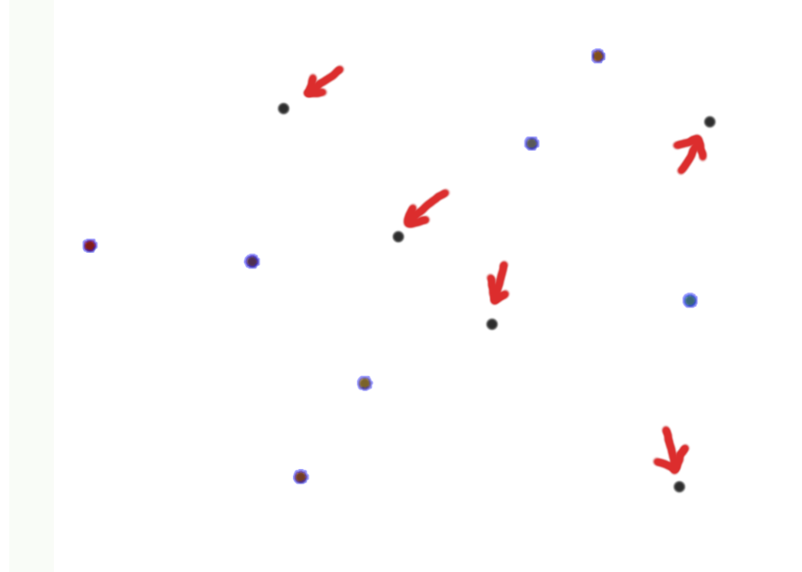
Grid can miss small objects. Lots of computation. Ugly.
Facebook Segment Anything Model
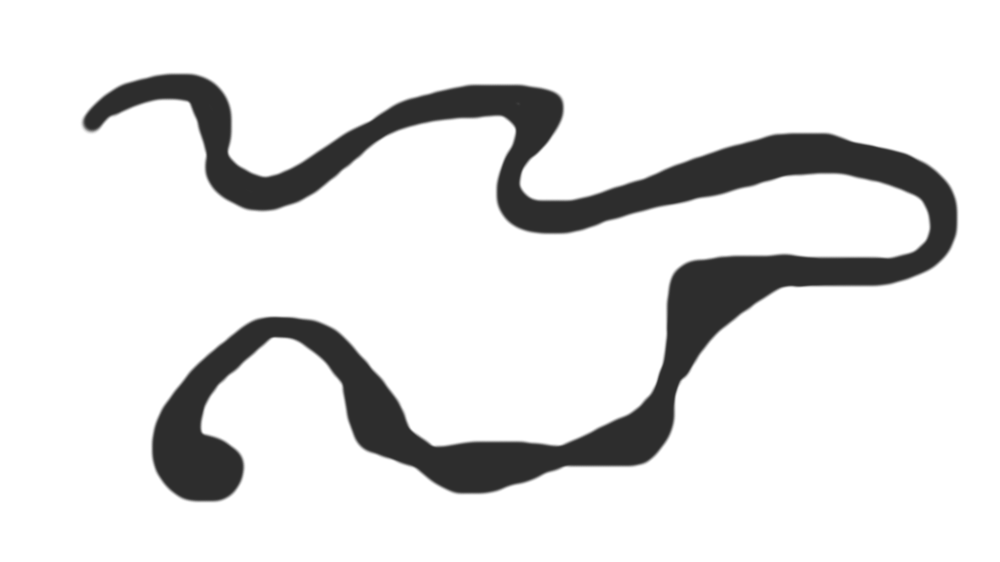
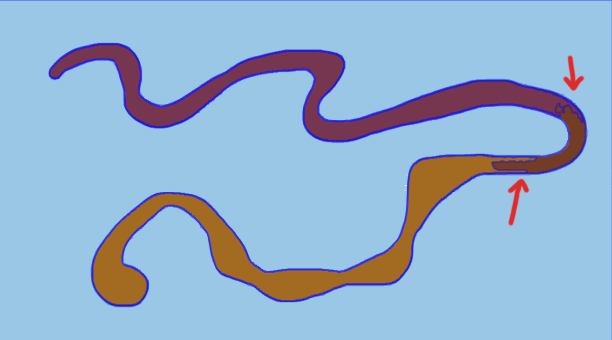
Apparently it's not perfect for complex shapes.
Border direction is all you need
Just predict the direction to the closest border.
Postprocessing
Border direction is enough information for reconstructing the objects.
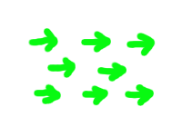
Parallel vectors -> same object
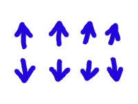
Diverging vectors -> same object
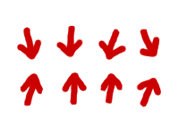
Converging vectors -> different objects
Why it's cool
- No boxes / assumptions about objects' shape.
- No made up definition of center.
- Only local context needed for prediction.
- Target is always well-behaved in [-1, 1].
- No ugly NMS.
- Robust to rescaling (?).
- Fast (?).
Not just border detection
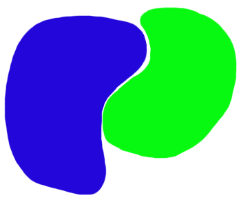
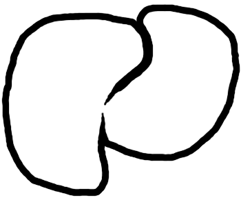
Fragile. Mis-prediction in a few pixels can cause cascading error.
Not just border detection
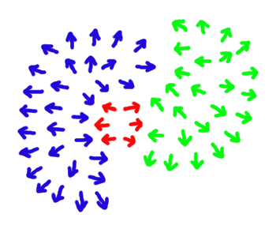
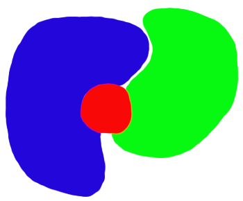
Robust. Redundancy of information allows prediction stability.
A Better Definition
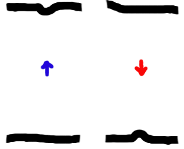
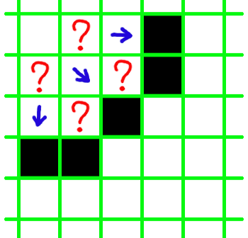
The simplest definition of border direction is "unstable".
A Better Definition
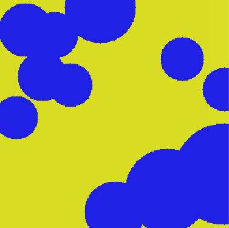
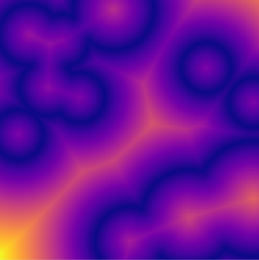
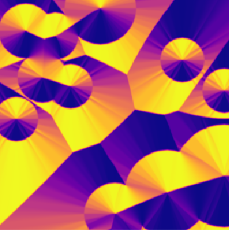
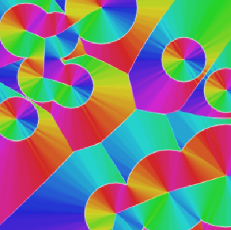
Gradient of the distance-to-border field.
Bordir
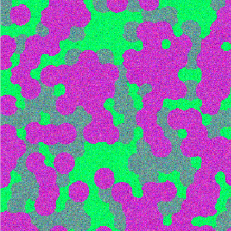
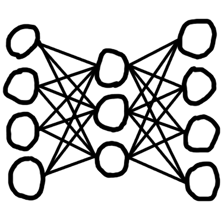
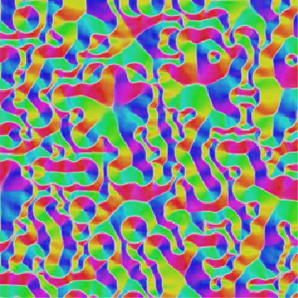
Classic ResNet as network.
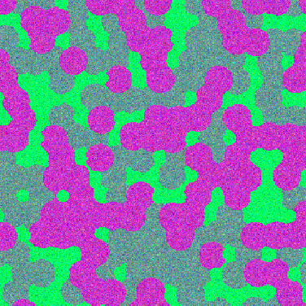
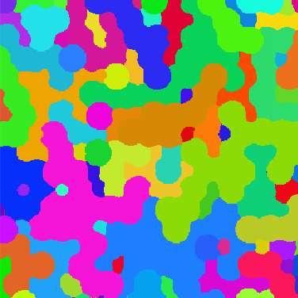
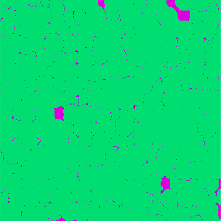
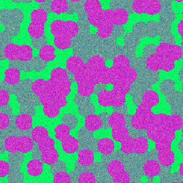
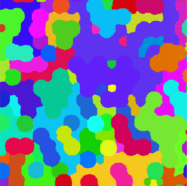
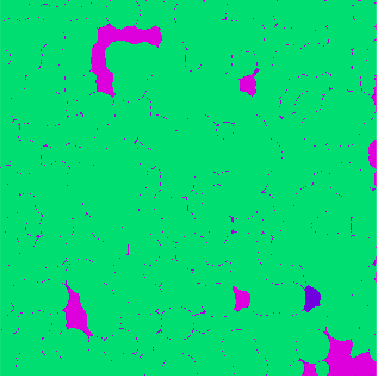
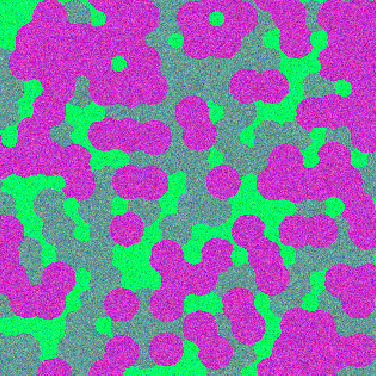
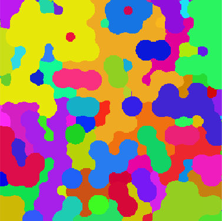
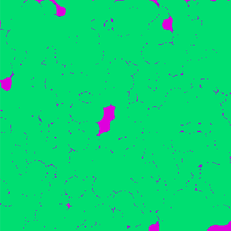
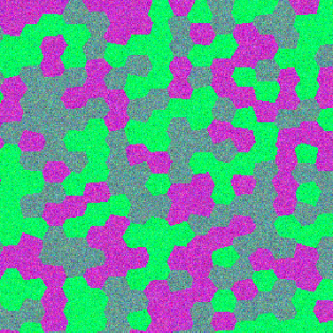
Predictions on the test set.
Instance segmentation
metrics
True positive is when intersection over union is above a threshold.
https://kharshit.github.io/blog/2019/09/20/evaluation-metrics-for-object-detection-and-segmentation
Problem 1: arbitrary threshold is involved
Problem 2: Integration is not intuitive anymore.
Very different kind of errors have the same metric.
Two classes: object and background. We have a target...
...and the model prediction. What are the errors?
Metrics
| Metric |
Value (%) |
| correct |
96.120 |
| instance error |
3.880 |
| split error |
6.209 |
merge error |
2.652 |
.